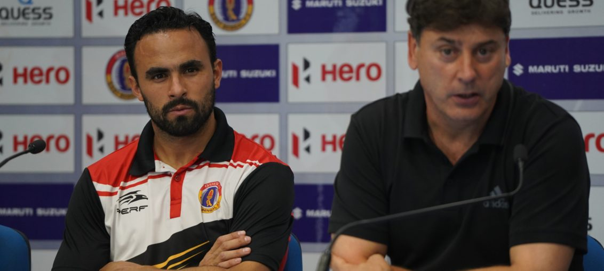

Posted at Date: February 26, 2019
Credit : রাইট স্পোর্টস ওয়েব ডেস্ক
চেন্নাইয়ের হাতে খেতাব তুলেই দিচ্ছে ইস্টবেঙ্গল!

ঘরের মাঠে প্রথম ম্যাচে চেন্নাই সিটি এফসি-র কাছে হেরেছিল ইস্টবেঙ্গল, এবারের আই লিগে। শেষ ম্যাচে আইজলের বিরুদ্ধে ১-১। আই লিগ খেতাব অধরাই থাকছে এবারও, নিরানব্বই শতাংশ নিশ্চিত এখন! আইজলে গিয়ে ২-৩ হেরে এসেছিল ইস্টবেঙ্গল, প্রথম পর্বে। যুবভারতী ক্রীড়াঙ্গন থেকেও এক পয়েন্ট নিয়ে গেল আইজল এফসি। তিন পয়েন্ট পেতেই পারত, যদি রেফারি উমেশ বোরা প্রথমার্ধের শেষে ক্রোমার গোল বাতিল না করতেন। লালহলুদের গোলরক্ষক রক্ষিত দাগারকে চাপে রেখেছিলেন ক্রোমা, সন্দেহ নেই। তাঁকে এড়িয়ে বল পাঠাতে সমস্যা ছিল। দাগার দাঁড়িয়ে থাকতেই পারেতেন বল ধরে। রেফারি সিদ্ধান্ত নিতেই। কিন্তু, দাগার ডানহাতে বল ছুড়তে গিয়েছিলেন, এ-ও সত্যি। বল তাঁর হাত থেকে বেরনোর পরই খুবই কাঠে-থাকা ক্রোমা পা বাড়িয়ে আটকে দেন। সহজেই ঠেলেও দেন গোলে। রেফারির মতে ফাউল। হলুদ কার্ডও দেখান ক্রোমাকে, ওভাবে গোলরক্ষককে বল ‘রিলিজ’ করার ক্ষেত্রে বাধা দেওয়ার কারণে। সঙ্গত বা অসঙ্গত যা-ই হোক না কেন, সিদ্ধান্ত বিতর্কিত, নিঃসন্দেহে। ওই গোল হলে বিরতিতেই ০-২ পিছিয়ে সাজঘরে ফিরত ইস্টবেঙ্গল।
আইজলের প্রথম গোলের সময় অফসাইড নিয়ে বিতর্ক থাকলেও সালাম রঞ্জন সিং-এর জন্য অফসাইড হওয়ার সম্ভাবনা ছিল না। সালাম প্রথম খেলতে নামলেন এএফসি এশিয়ান কাপের শেষ ম্যাচে জাতীয় দলের হয়ে খেলার পর। প্রতিযোগিতায় চারবার হলুদ কার্ড দেখে জনি আকোস্তা নির্বাসিত ছিলেন এই ম্যাচে। আকোস্তা এবং বোরখা গোমেজের জুটি যতটা নির্ভরতা দিয়েছিল ইস্টবেঙ্গল রক্ষণকে, স্বাভাবিকভাবেই ততটা নিরাপত্তা দিতে পারেননি সালাম। অনেকটাই উঠে খেলে লালহলুদ রক্ষণভাগ। কোনওভাবে যদি একবার সেই অফসাইডের ফাঁদ এড়িয়ে ফেলতে পারে বিপক্ষ, বিপদ। ২৩ মিনিটে হয়েছিল ঠিক তা-ই। জারিয়ানের পাঠানো বল ধরে আগুয়ান দাগারের মাথার ওপর দিয়ে জালে বল পাঠিয়েছিলেন লেওন্সে দোদোজ। ইস্টবেঙ্গল সেই গোল শোধ করে ৬৫ মিনিটে। পরিবর্ত সামাদ আলি মল্লিক ওপরে উঠে সেন্টার রেখেছিলেন যা ধরতে পারেননি লালমপুইয়া। পেছন থেকে এনরিকে এসকেদা ফাঁকা গোলে বল পাঠান হেডে। বাকি সময় ইস্টবেঙ্গল চেষ্টা করেছিল জয়ের গোল তুলে নিতে। কিন্তু ৭০ মিনিটে করিম ওমোলাজা লাল কার্ড দেখা সত্ত্বেও (জবিকে ফাউলের জন্য প্রথম হলুদ, পরে রেফারির সিদ্ধান্তে অসন্তোষ প্রকাশের জন্য দ্বিতীয়বার হলুদ) মাঠে একজন বেশি থাকার সুবিধা নিতে পারেনি আলেখান্দ্রো মেনেন্দেজের দল। প্রথমার্ধেও বারবারই বলের দখল নিজেদের পায়ে রাখলেও বিপক্ষ রক্ষণ খুলে ফেলতে পারেননি জবি জাস্টিন, খাইমে সানতোসরা। কাজে আসেনি পেছন থেকে লালরিনদিকা রালতে বা বোরখার পাঠানো লং বলগুলোও, অন্য অনেক দিন যে-বলগুলোতেও খুলে যেত গোলের রাস্তা। ফলে, আই লিগের শেষ দিকে এসে খেই হারিয়ে ফেলার পুরনো রোগ সারেনি ইস্টবেঙ্গলের, পরিষ্কার।
পরের ম্যাচ রিয়েল কাশ্মীরের বিরুদ্ধে, সোমবার সর্বভারতীয় ফুটবল সংস্থার নেওয়া সিদ্ধান্তে যা হবে দিল্লিতে, আগামী ২৮ ফেব্রুয়ারি। ওই ম্যাচে ইস্টবেঙ্গল পয়েন্ট হারালেই চ্যাম্পিয়ন চেন্নাই! ১৮ ম্যাচে ৪০ পয়েন্ট চেন্নাইয়ের, দ্বিতীয় ইস্টবেঙ্গলের ১৭ ম্যাচে ৩৩। তাই, কাশ্মীরের বিরুদ্ধে দিল্লিতে ইস্টবেঙ্গল ড্র করলে চেন্নাইয়ের সঙ্গে তফাৎ থাকবে ৬ পয়েন্টের। তখন চেন্নাই বাকি দুটি ম্যাচ হারলে এবং ইস্টবেঙ্গল বাকি দুটি ম্যাচই জিতলে, পয়েন্ট সমান। কিন্তু, চেন্নাইয়ের বিরুদ্ধে ঘরে এবং বাইরে দুটি ম্যাচেই হারের কারণে ইস্টবেঙ্গলকে থেকে যেতে হবে দ্বিতীয় স্থানেই। আর, রিয়েল কাশ্মীরকে যদি হারায়ও ইস্টবেঙ্গল (আপাত দৃষ্টিতে বেশ কঠিন কারণ কাশ্মীর ১৭ ম্যাচে মাত্র দশ গোল খেয়েছে যা আই লিগে প্রথম মরসুমেই তাদের সাফল্যের রহস্য) পরের দিন, ১ মার্চ গোয়ায় চার্চিল ব্রাদার্সের বিরুদ্ধে জিতলেই খেতাব জিতে নিতে পারে চেন্নাই সিটি এফসি। জাতীয় লিগের নাম বদলে আই লিগ হওয়ার পর, খেতাব অধরাই থাকছে ইস্টবেঙ্গলের এ-মরসুমেও, এখন প্রায়-নিশ্চিত!
Top Stories

Calcutta Sports Journalists' Club requests the pleasure of your company at its annual awards functionMore...

Jasprit Bumrah has been declared fit and he will now be available for selection for India's third Test against England at Trent Bridge. More...

Ronaldo has increased Juventus' standing among Europe's elite. More...